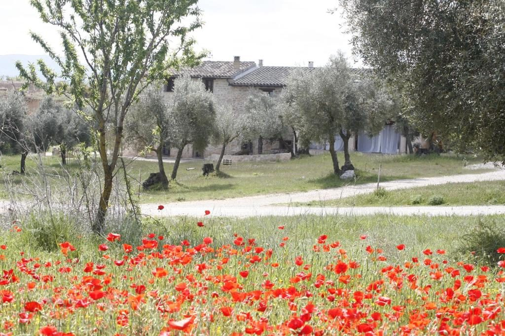
Matarraña
La Toscane Espagnole
au cœur du Bas-Aragon
Une immersion confidentielle entre villages médiévaux, oliveraies séculaires, gorges spectaculaires et gastronomie raffinée.
vpdvoyages.com

Une immersion confidentielle entre villages médiévaux, oliveraies séculaires, gorges spectaculaires et gastronomie raffinée.
L'Esprit du Séjour
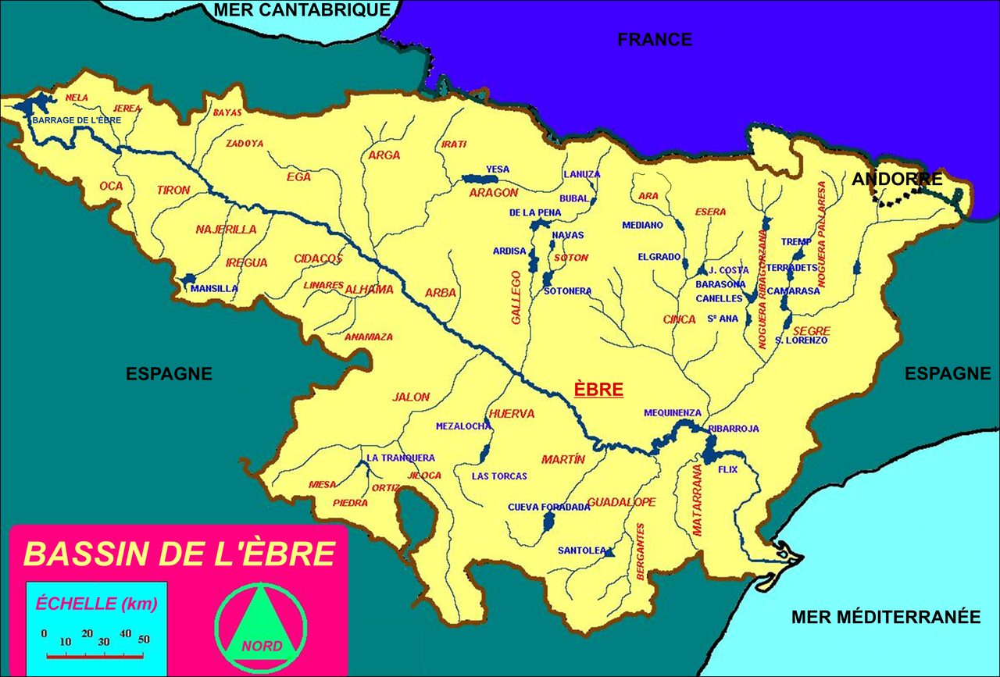
La comarque du Matarraña est située dans la province de Teruel, au sud-est de l'Aragon, à la charnière de la Catalogne et de la région de Valence. À quelques heures de route du Sud-Ouest de la France, elle offre un dépaysement total au cœur d'une vallée verdoyante irriguée par la rivière Matarraña.
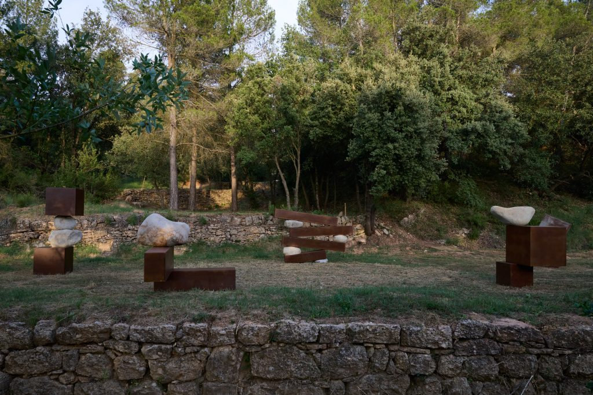

Surnommée ainsi pour ses collines douces couvertes d'oliveraies, de pins et de vignobles, ponctuées de villages perchés aux pierres dorées. Un microclimat doux et une lumière exceptionnelle favorisent la culture de la vigne et de l'olivier depuis l'époque ibérique.
Capitale du Bas-Aragon

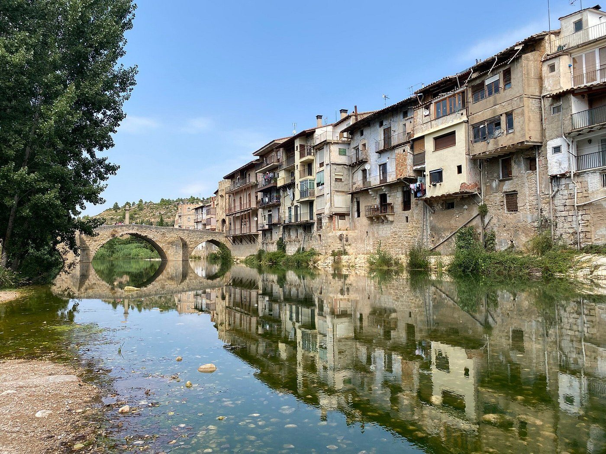
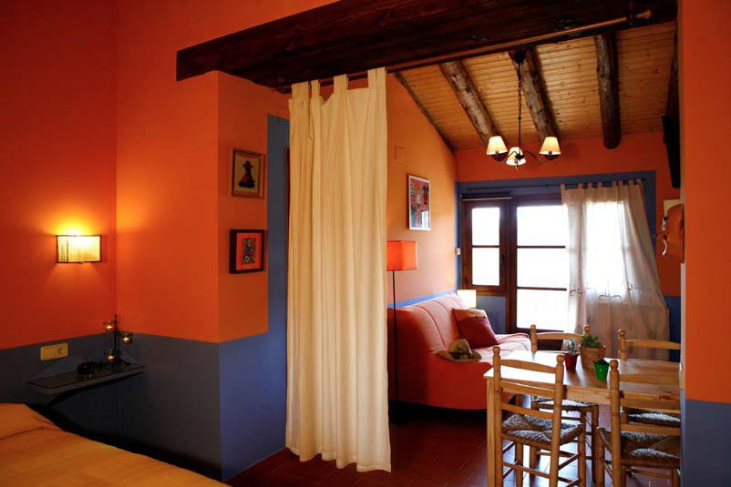
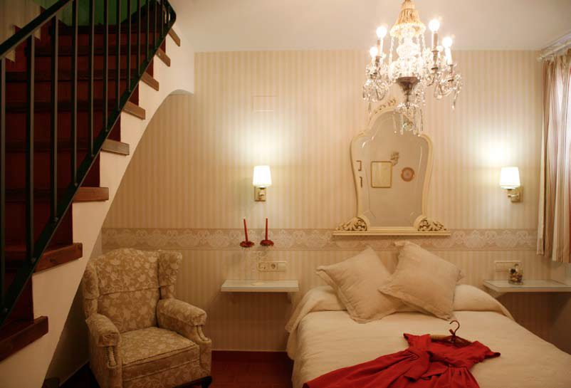
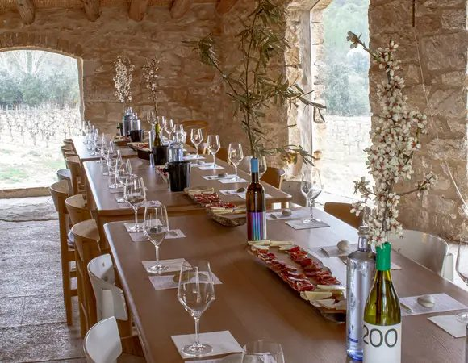
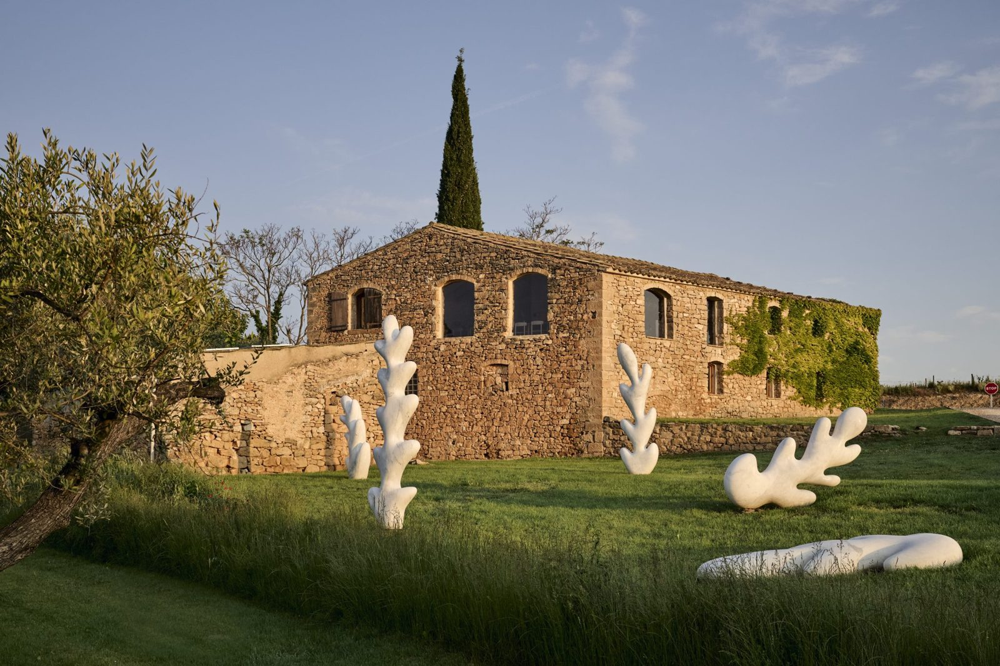
Niché dans la vallée de Cretas, le domaine Venta d'Aubert produit des vins biologiques d'exception en associant cépages traditionnels et savoir-faire exigeant.
Joyau d'Architecture Rurale
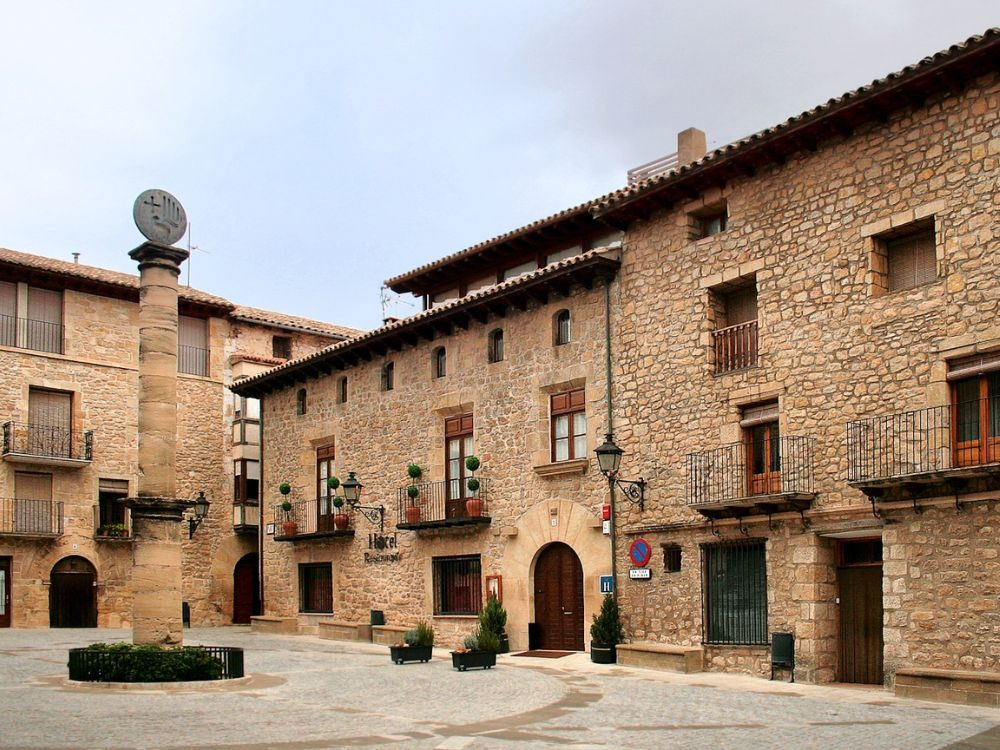
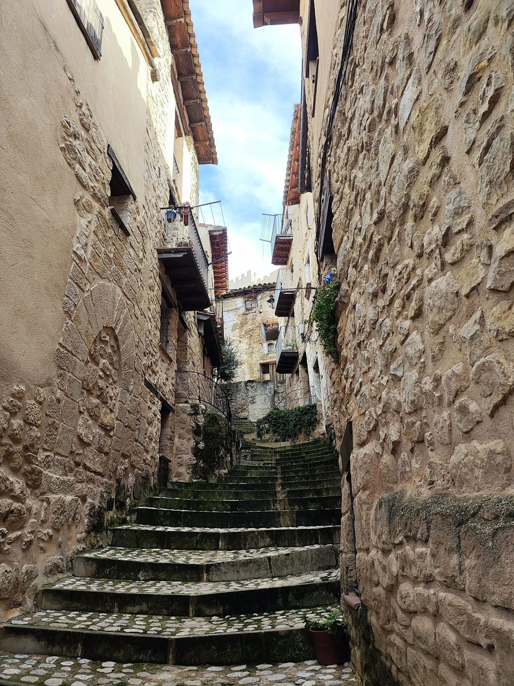
Cretas est un ravissant village aux ruelles pavées en pierre dorée, situé à la frontière culturelle entre l'Aragon et la Catalogne.
Classé parmi les « Mas Bellos Pueblos de España »
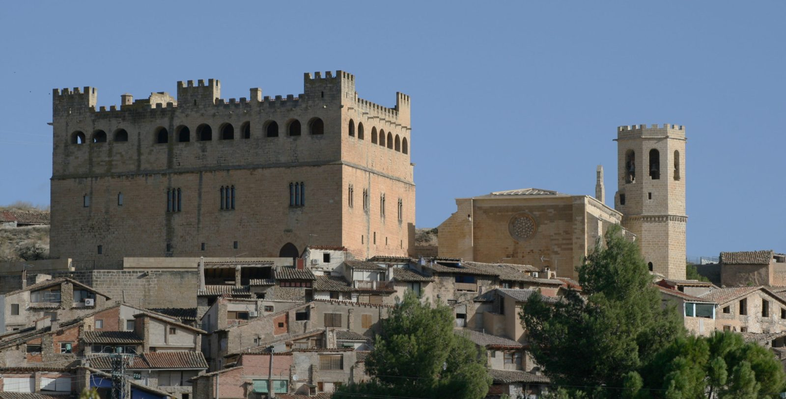
Valderrobres offre une vision féerique dès le passage de son pont médiéval.
Itinéraire Jaune · La Vía Verde à Vélo
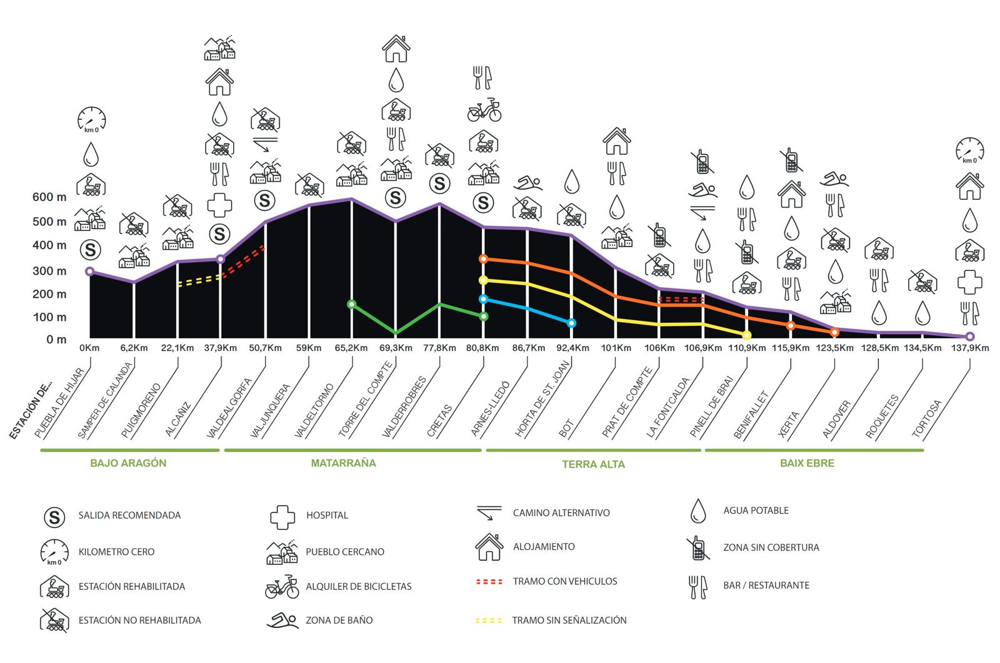
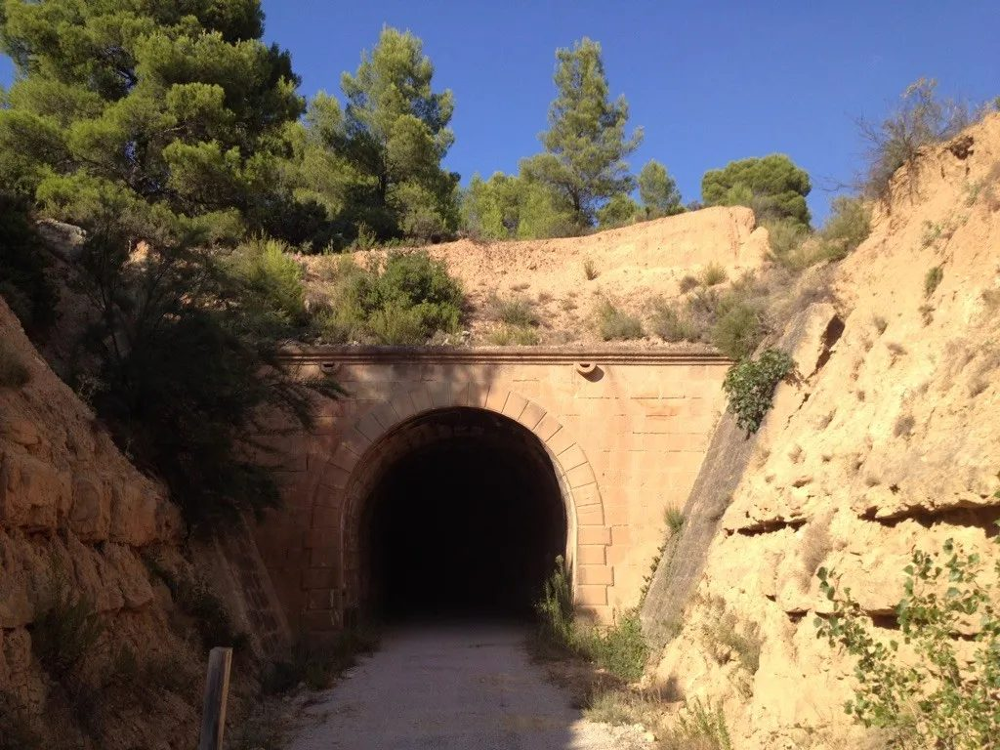
L'ancienne voie ferrée du Val de Zafán a été transformée en une somptueuse piste cyclable panoramique à travers tunnels et viaducs.
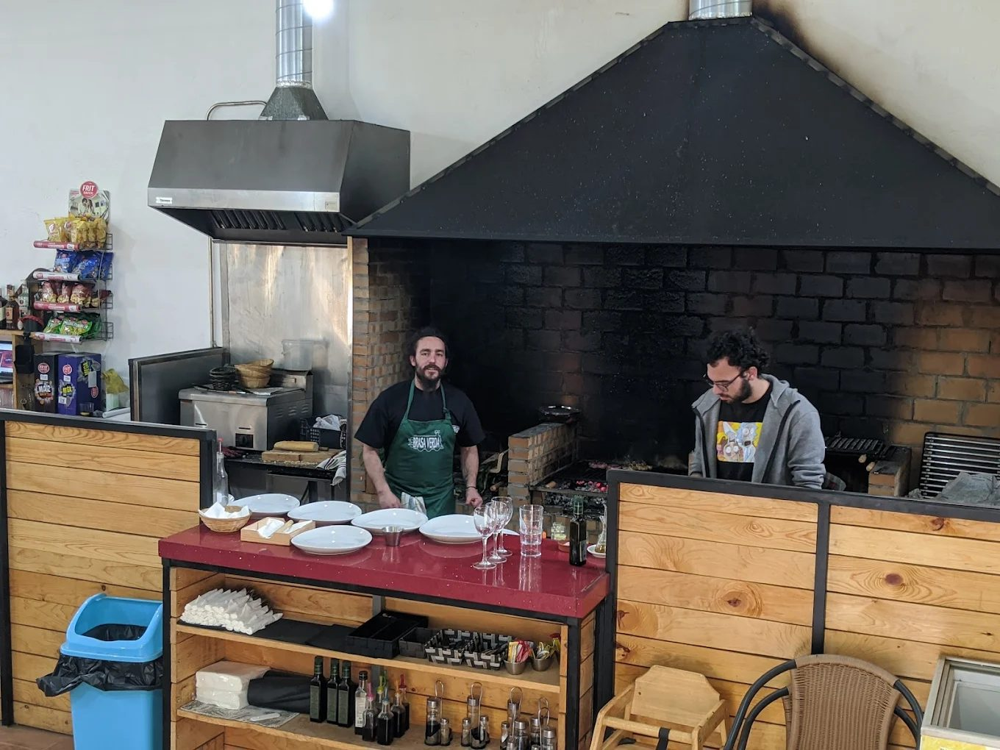
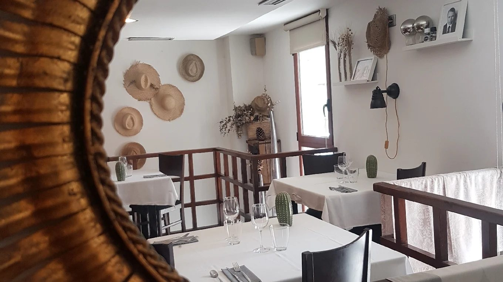
Huile d'olive extra-vierge AOP, truffe noire de Teruel, jambon Serrano et vins locaux à chaque étape gourmande.
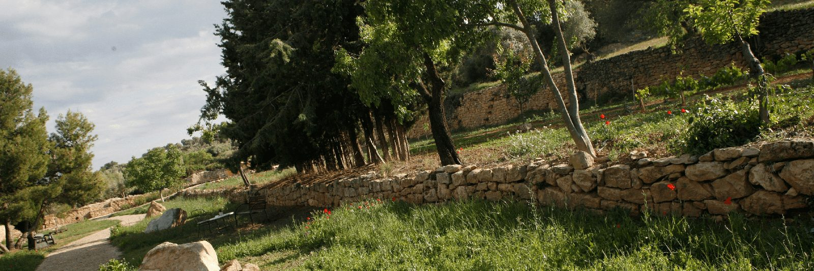
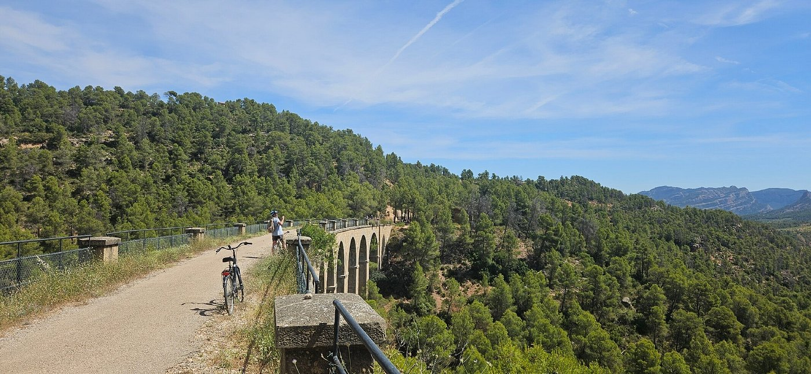
Matarraña, avec son mélange unique de villages médiévaux, d'oliveraies séculaires et de gorges secrètes, promet une escapade authentique et ressourçante.
Repartez avec des souvenirs plein les yeux et le goût des saveurs du Matarraña !